Färberei
Färberei ist der Prozess der Veränderung der Farbe von Kleidung. Das Färben kann auf zwei Arten durchgeführt werden, die beide in Emilys Haus durchführbar sind: durch die Verwendung der Farbtöpfe und durch die Verwendung der Nähmaschine. Beide werden während einer Zwischensequenz mit Emily freigeschaltet, nachdem man mindestens 1 Stoff erhalten hat.
Farbtöpfe

Mit den Farbtöpfen rechts neben der Nähmaschine in Emilys Haus kann die Farbe der Kleidung geändert werden. Dazu muss der/die Gegenstand(e), den/die Sie färben möchten, getragen werden (jeder Gegenstand wird ohne zusätzliche Kosten separat gefärbt).
Um einen Farbstoff herzustellen, muss man mit den Töpfen interagieren und einen Gegenstand in seinem Inventar haben, der jeden Farbstofftopf (rot, orange, gelb, grün, blau und violett) repräsentiert. Die Gegenstände im Inventar haben unten links einen Farbpunkt, der dem Farbtopf entspricht, zu dem sie gehören. Wenn man über jeden Topf schwebt, werden auch die verfügbaren Gegenstände für diese Farbe angezeigt.
Sobald die Töpfe gefüllt sind, leuchtet im Menü eine Farbflasche auf. Wenn man auf die Schaltfläche klickt, erscheinen die Farbbalken aus dem Menü "Charakter erstellen", mit denen man die gewünschte Farbe für das Kleidungsstück erstellen kann, und die Gegenstände in den Farbtöpfen werden verbraucht.
Unten aufgeführt ist eine Komplette Liste aller Gegenstände, die die Farbtöpfe akzeptieren. Gegenstände in fett werden in der Sammelbox von Mr Qis Auftrag Qis Prismatische Anzeige akzeptiert.
Nähmaschine

Man kann die Nähmaschine auch für einen grundlegenden Farbwechsel verwenden, indem man das Kleidungsstück unten links in den Einzug der Nähmaschine legt und das als Farbstoff zu verwendende Teil oben rechts auf die Spule legt. Der Artikel auf der Spule wird dabei verbraucht. Es gibt eine Vorschau des geänderten Gegenstands im Menü der Nähmaschine.
Wenn man zum Färben von Kleidung eine Prismatische Scherbe verwendet, öffnet sich ein Menü, in dem man mit Hilfe von Schiebereglern eine beliebige Farbe auswählen kann.
Wenn man mit der Nähmaschine färbt, erhält man eine Kombination aus der aktuellen Farbe des Artikels und dem verwendeten Artikel. Wenn man beispielsweise einen dunkel-violetten Rock hat und Wolle (weiß) als Färbemittel hinzufügt, wird er hellviolett. Wenn man dem neuen Rock wieder Wolle hinzufügt, wird er noch heller violett. Wenn wieder Wolle hinzugefügt wird, wird er weiß. Also blaues Hemd + roter Artikel = violett. Blaues Hemd + gelber Artikel = grünlich, usw.
Farbstärke
Die Basis Farbstärke beträgt 25%, "Mittlere" Farbstärke liegt bei 50% und "Kräftige" Farbstärke bei 100%. Um die kräftigste Farbsättigung zu erreichen, kann es erforderlich sein, die Kleidung bis zu 4 mal zu färben.
Unten aufgeführt ist ein Vergleich der Effekte der Farbstärke bei einem weißen Shirt. Feuer-Quarz hat eine normale Farbstärke, Auberginen-Parmesan hat eine mittlere Farbstärke und Preiselbeere eine kräftige Farbstärke.
| Original | 25% | 50% | 75% | 100% |
|---|---|---|---|---|
|
|
Unten aufgeführt ist eine ausklappbare Tabelle aller Gegenstände, die zum Färben von Kleidung bei der Nähmaschine genutzt werden können, ihre Farben und Farbstärken:
| Gegenstand | Farben- name |
Farbe bei voller Farbsättigung (RGB) [1] |
Farbstärke | |
|---|---|---|---|---|
| Aal | kupfern | 179,85,0 | ||
| 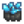 | Aerinit | zyan | 0,255,255 | |
| Ahornriegel | braun | 130,73,37 | ||
| Ahornsamen | braun | 130,73,37 | ||
| Ahornsirup | braun | 130,73,37 | ||
| Alamit | grau | 128,128,128 | ||
| Algensuppe | dunkel grün | 0,100,0 | ||
| Alte Puppe | blau | 46,85,183 | kräftig | |
| Altertümliche Trommel | violett | 115,41,181 | kräftig | |
| Amarant | blass violett rot | 219,112,147 | mittel | |
| Amethyst | violett | 115,41,181 | ||
| Amethyst-Ring | violett | 115,41,181 | ||
| Amphibienfossil | weiß | 255,255,255 | ||
| Ananas | gelb | 255,230,0 | ||
| Angeschlagene Amphore | braun | 130,73,37 | kräftig | |
| Anglerfisch | gelb | 255,230,0 | ||
| Anker | grau | 128,128,128 | kräftig | |
| Antikes Schwert | grau | 128,128,128 | kräftig | |
| Apfel | rot | 220,0,0 | ||
| Aprikose | orange | 255,128,0 | ||
| Aquamarin | aquamarin | 127,255,212 | ||
| Aquamarin-Ring | zyan | 0,255,255 | ||
| Artischocke | grün | 10,143,0 | mittel | |
| Artischockendip | weiß | 255,255,255 | ||
| Aubergine | violett | 115,41,181 | mittel | |
| Auberginen-Parmesan | rot | 220,0,0 | mittel | |
| 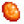 | Auripigment | orange | 255,128,0 | |
| Auster | grau | 128,128,128 | ||
| Banane | gelb | 255,230,0 | ||
| Bananenpudding | gelb | 255,230,0 | ||
| Barbarenring | sand | 255,222,173 | ||
| Barsch | gelb | 255,230,0 | ||
| Baryt | rot | 220,0,0 | ||
| Basalt | grau | 128,128,128 | ||
| Batterie | zyan | 0,255,255 | ||
| Bauernmahlzeit | braun | 130,73,37 | ||
| Baum Dünger | braun | 130,73,37 | ||
| Bergarbeiter-Leckerbissen | rot | 220,0,0 | ||
| Bier | gelb | 255,230,0 | ||
| Bixit | schwarz | 45,45,45 | ||
| Blaubarsch | grün | 10,143,0 | ||
| Blaubeere | blau | 46,85,183 | kräftig | |
| Blaubeertörtchen | blau | 46,85,183 | ||
| Blaue Jazz | blau | 46,85,183 | mittel | |
| Blauer Diskusbuntbarsch | zyan | 0,255,255 | ||
| Bleiche Brühe | weiß | 255,255,255 | ||
| Blobfisch | sand | 255,222,173 | ||
| Blumenkohl | weiß | 255,255,255 | mittel | |
| 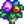 | Blumenstrauß | pink | 255,163,186 | |
| Bohneneintopf | grün | 10,143,0 | ||
| Bombe | schwarz | 45,45,45 | ||
| Brasse | blau | 46,85,183 | ||
| Brombeer-Pastete | dunkel blau | 0,0,139 | ||
| Brombeere | dunkel blau | 0,0,139 | ||
| Brot | braun | 130,73,37 | ||
| Bruschetta | rot | 220,0,0 | ||
| Buntbarsch | grau | 128,128,128 | ||
| Coelestin | eisen | 197,213,224 | ||
| Dekorativer Fächer | weiß | 255,255,255 | kräftig | |
| Diamant | weiß | 255,255,255 | ||
| Dinosaurier Mayonnaise | weiß | 255,255,255 | ||
| Dinosaurier-Ei | grün | 10,143,0 | kräftig | |
| Dolomit | pink | 255,163,186 | ||
| Donner-Ei | dunkel violett | 148,0,211 | ||
| Dornenring | sand | 255,222,173 | ||
| Drachenzahn | orange | 255,128,0 | ||
| Dreifacher Espresso | dunkel braun | 139,69,19 | kräftig | |
| Durchweichte Zeitung | grau | 128,128,128 | ||
| Edelwicke | violett | 115,41,181 | mittel | |
| Ei | weiß | 255,255,255 | ||
| Eichel | braun | 130,73,37 | ||
| Eichenharz | grün | 10,143,0 | ||
| Eis | weiß | 255,255,255 | ||
| Eis-Pip | blau | 46,85,183 | ||
| Eisenbarren | eisen | 197,213,224 | ||
| Eisenerz | eisen | 197,213,224 | ||
| Elfische Juwelen | gelb | 255,230,0 | kräftig | |
| Enten-Mayonnaise | weiß | 255,255,255 | ||
| Entenei | weiß | 255,255,255 | ||
| Entenfeder | grün | 10,143,0 | ||
| Erdbeere | rot | 220,0,0 | mittel | |
| Erdkristall | kupfern | 179,85,0 | ||
| Esperit | grün | 10,143,0 | ||
| Essig | weiß | 255,255,255 | ||
| Explosive Munition | rot | 220,0,0 | ||
| Fackel | gelb | 255,230,0 | ||
| Fasern | grün | 10,143,0 | ||
| Feenrose | pink | 255,163,186 | mittel | |
| Feenstein | violett | 115,41,181 | ||
| 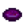 | Feuer-Opal | dunkel violett | 148,0,211 | |
| Feuer-Quarz | rot | 220,0,0 | ||
| Fisch-Taco | gelb | 255,230,0 | ||
| Fischeintopf | grau | 128,128,128 | ||
| Fischlaich (jeder) | orange | 255,128,0 | ||
| Fischsuppe | weiß | 255,255,255 | ||
| Fledermausflügel | schwarz | 45,45,45 | ||
| Flunder | braun | 130,73,37 | ||
| Fluorapatit | violett | 115,41,181 | ||
| Flusskrebs | dunkel grau | 169,169,169 | ||
| Forellenbarsch | grün | 10,143,0 | ||
| Forellensuppe | braun | 130,73,37 | ||
| Frau Angler | pink | 255,163,186 | ||
| Frühlingszwiebel | weiß | 255,255,255 | ||
| Füllung | braun | 130,73,37 | ||
| Garnele | pink | 255,163,186 | ||
| Gealterter Fischlaich (jeder) | orange | 255,128,0 | ||
| Gebackener Fisch | gelb | 255,230,0 | ||
| Gebratene Pilze | braun | 130,73,37 | ||
| Gebratener Aal | gelb | 255,230,0 | ||
| Gebratener Tintenfisch | gelb | 255,230,0 | ||
| Gefrorene Geode | zyan | 0,255,255 | ||
| Gefrorene Träne | zyan | 0,255,255 | ||
| Geisterkristall | grau | 128,128,128 | ||
| Eingelegtes (jedes) | grün | 10,143,0 | ||
| Gelee (jedes) | dunkel red | 139,0,0 | ||
| Geminit | grau | 128,128,128 | ||
| Gemüseeintopf | grün | 10,143,0 | ||
| Gemüsepfanne | braun | 130,73,37 | ||
| Geode | braun | 130,73,37 | ||
| Geröstete Haselnüsse | dunkel braun | 139,69,19 | ||
| Geschwind-Wachs | braun | 130,73,37 | ||
| Getrockneter Seestern | gelb | 255,230,0 | kräftig | |
| Gewöhnlicher Pilz | dunkel braun | 139,69,19 | ||
| Gewürzbeere | orange | 255,128,0 | ||
| Ginger Ale | grün | 10,143,0 | ||
| Glasaugenbarsch | gelb | 255,230,0 | ||
| Glasierte Süßkartoffeln | braun | 130,73,37 | ||
| Glasscherben | zyan | 0,255,255 | kräftig | |
| Gletscherfisch | blau | 46,85,183 | ||
| Gletscherfisch Junior | blau | 46,85,183 | ||
| Glücksmahlzeit | gelb | 255,230,0 | ||
| Glücksring | gold | 255,215,0 | ||
| Glühsteinring | gold | 255,215,0 | ||
| Goldbarren | gold | 255,215,0 | ||
| Goldene Kokosnuss | gelb | 255,230,0 | ||
| Goldene Maske | gold | 255,215,0 | kräftig | |
| Goldener Kürbis | gold | 255,215,0 | ||
| Goldenes Relikt | gold | 255,215,0 | kräftig | |
| Golderz | gold | 255,215,0 | ||
| Goldmakrele | orange | 255,128,0 | ||
| Gotteslachs | orange | 255,128,0 | ||
| Granatapfel | dunkel pink | 255,20,147 | ||
| Granit | grau | 128,128,128 | ||
| Große Milch | weiß | 255,255,255 | ||
| Große Ziegenmilch | weiß | 255,255,255 | ||
| Großes Ei | weiß | 255,255,255 | ||
| Gruselfisch | blau | 46,85,183 | ||
| Grünalge | dunkel grün | 0,100,0 | ||
| Grüne Bohne | grün | 10,143,0 | mittel | |
| Grüner Tee | grün | 10,143,0 | ||
| Grünkohl | grün | 10,143,0 | kräftig | |
| Hartholz | braun | 130,73,37 | ||
| Muskelbalsam | dunkel gelb | 184,134,11 | ||
| Energie-Tonikum | rot | 220,0,0 | ||
| Harz | gelb | 255,230,0 | ||
| Haselnuss | braun | 130,73,37 | ||
| Hasenpfote | gelb | 255,230,0 | ||
| Hecht | gelb | 255,230,0 | ||
| Heilbutt | dunkel grau | 169,169,169 | ||
| Heiratsring | iridium | 105,15,255 | ||
| Heißer Java Ring | sand | 255,222,173 | ||
| Helles Bier | gold | 255,215,0 | ||
| Helvit | rot | 220,0,0 | ||
| Herbstfülle | braun | 130,73,37 | ||
| Hering | blau | 46,85,183 | ||
| Herzmuschel | dunkel grau | 169,169,169 | ||
| Heu | gelb | 255,230,0 | ||
| Holz | braun | 130,73,37 | ||
| Honig (jeder) | gelb | 255,230,0 | ||
| Hopfen | grün | 10,143,0 | ||
| Hummer | rot | 220,0,0 | ||
| Hummer-Bisque | weiß | 255,255,255 | ||
| Hydrogel (Qualität) | braun | 130,73,37 | ||
| Hydrogel (Standard) | braun | 130,73,37 | ||
| Hämatit | kupfern | 179,85,0 | ||
| Höhlenkarotte | braun | 130,73,37 | ||
| Hühnerstatue | sand | 255,222,173 | kräftig | |
| 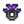 | Immunitätsband | iridium | 105,15,255 | |
| Indischer Glaswels | weiß | 255,255,255 | ||
| Ingwer | gelb | 255,230,0 | ||
| Iridiumband | iridium | 105,15,255 | ||
| Iridiumbarren | iridium | 105,15,255 | ||
| Iridiumerz | iridium | 105,15,255 | ||
| Jade | jade | 130,158,93 | ||
| Jade-Ring | jade | 130,158,93 | ||
| Jagoit | gold | 255,215,0 | ||
| Jamborit | hellgrün | 0,255,0 | ||
| Jaspis | rot | 220,0,0 | ||
| Joja-Cola | blau | 46,85,183 | ||
| Jukebox-Ring | schwarz | 45,45,45 | ||
| Kaffee | dunkel braun | 139,69,19 | ||
| Kaffeebohne | braun | 130,73,37 | ||
| Kaktus-Frucht | grün | 10,143,0 | ||
| Kalkstein | grau | 128,128,128 | ||
| Kalzit | gelb | 255,230,0 | ||
| Karpfen | gelb | 255,230,0 | ||
| Karpfen-Überraschung | braun | 130,73,37 | ||
| Kartoffel | braun | 130,73,37 | mittel | |
| Kartoffelpuffer | braun | 130,73,37 | ||
| Katzenfisch | grau | 128,128,128 | ||
| Kauhölzchen | braun | 130,73,37 | kräftig | |
| Kaulbarsch | grau | 128,128,128 | ||
| Kaviar | schwarz | 45,45,45 | ||
| Kekse | braun | 130,73,37 | ||
| Kiefernteer | braun | 130,73,37 | ||
| Kiefernzapfen | braun | 130,73,37 | ||
| 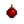 | Kirschbombe | rot | 220,0,0 | |
| Kirsche | rot | 220,0,0 | ||
| Kleiner Leuchtring | gelb | 255,230,0 | ||
| Kleiner Magnetring | grau | 128,128,128 | ||
| Knoblauch | weiß | 255,255,255 | mittel | |
| Knoblauchöl | gelb grün | 173,255,47 | ||
| Knochenflöte | sand | 255,222,173 | kräftig | |
| Knochenfragment | sand | 255,222,173 | ||
| Knuspriger Barsch | braun | 130,73,37 | ||
| Kohle | schwarz | 45,45,45 | ||
| Kohlsalat | grün | 10,143,0 | ||
| Kokosnuss | dunkel braun | 139,69,19 | ||
| Komisches Brötchen | pink | 255,163,186 | ||
| Koralle | rot | 220,0,0 | ||
| Krabbe | rot | 220,0,0 | ||
| Krabbenkuchen | braun | 130,73,37 | ||
| Krabbenreuse | braun | 130,73,37 | ||
| Krabbenschalering | braun | 130,73,37 | ||
| Kriegerring | sand | 255,222,173 | ||
| Kristallfrucht | blau | 46,85,183 | ||
| Krokus | violett | 115,41,181 | mittel | |
| Kugelfisch | gelb | 255,230,0 | ||
| Kupferbarren | kupfern | 179,85,0 | ||
| Kupfererz | kupfern | 179,85,0 | ||
| Kyanit | dunkel blau | 0,0,139 | ||
| Käferfleisch | dunkel pink | 255,20,147 | ||
| Käfersteak | pink | 255,163,186 | ||
| Käse | gelb | 255,230,0 | ||
| Köder | pink | 255,163,186 | ||
| Kürbis | orange | 255,128,0 | mittel | |
| Kürbiskuchen | orange | 255,128,0 | ||
| Kürbislaterne | orange | 255,128,0 | ||
| Kürbissuppe | orange | 255,128,0 | ||
| Lachs | salmon | 255,85,95 | ||
| Lachs-Mahlzeit | pink | 255,163,186 | ||
| Lachsbeere | rot | 220,0,0 | ||
| Lauch | weiß | 255,255,255 | ||
| Lava-Aal | rot | 220,0,0 | ||
| Lebenselixier | dunkel pink | 255,20,147 | ||
| Legende | grün | 10,143,0 | ||
| Legende II | grün | 10,143,0 | ||
| Lehm | braun | 130,73,37 | ||
| Lengdorsch | braun | 130,73,37 | ||
| Leuchtring | gelb | 255,230,0 | ||
| Lunarit | weiß | 255,255,255 | kräftig | |
| Luxus-Geschwind-Wachs | braun | 130,73,37 | ||
| Löwenzahn | gelb | 255,230,0 | ||
| Magmahut | orange | 255,128,0 | ||
| Magma-Geode | rot | 220,0,0 | ||
| Magnetring | grau | 128,128,128 | ||
| Mahagoni-Samen | braun | 130,73,37 | ||
| Mais | gelb | 255,230,0 | mittel | |
| Maki-Rolle | schwarz | 45,45,45 | ||
| Malachit | grün | 10,143,0 | ||
| Mango | gelb | 255,230,0 | ||
| Mango Klebreis | gelb | 255,230,0 | ||
| Marmor | grau | 128,128,128 | ||
| Matrosenteller | gelb | 255,230,0 | ||
| Mayonnaise | weiß | 255,255,255 | ||
| Meerschaumpudding | blau | 46,85,183 | ||
| 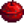 | Mega-Bombe | rot | 220,0,0 | |
| Melone | pink | 255,163,186 | mittel | |
| Merkwürdige Puppe (gelb) | gelb | 255,230,0 | kräftig | |
| Merkwürdige Puppe (grün) | grün | 10,143,0 | kräftig | |
| Met | gold | 255,215,0 | ||
| Miesmuschel | grau | 128,128,128 | ||
| Milch | weiß | 255,255,255 | ||
| Milchreis | weiß | 255,255,255 | ||
| Mitternachtskarpfen | iridium | 105,15,255 | ||
| Mitternächtlicher Tintenfisch | blau | 46,85,183 | ||
| Mohn | orange | 255,128,0 | mittel | |
| Mohnmuffin | mohnviolett | 82,47,153 | ||
| Monster-Moschus | violett | 115,41,181 | ||
| Morchel | braun | 130,73,37 | ||
| Mumifizierte Fledermaus | sand | 255,222,173 | ||
| Mumifizierter Frosch | sand | 255,222,173 | ||
| Mutantenkarpfen | grün | 10,143,0 | ||
| Müll | schwarz | 45,45,45 | ||
| Müsliriegel | braun | 130,73,37 | ||
| Napalm Ring | orange | 255,128,0 | ||
| Narzisse | gelb | 255,230,0 | ||
| Nautilusfossil | weiß | 255,255,255 | ||
| Nautilusmuschel | orange | 255,128,0 | ||
| Nekoit | pink | 255,163,186 | ||
| Neptunit | schwarz | 45,45,45 | ||
| Öl | gelb | 255,230,0 | ||
| Obsidian | schwarz | 45,45,45 | ||
| Obstsalat | gelb | 255,230,0 | ||
| Oktopus | orange | 255,128,0 | ||
| Omelett | weiß | 255,255,255 | ||
| Omni-Geode | grau | 128,128,128 | ||
| Opal | hell cyan | 180,255,255 | ||
| Orange | orange | 255,128,0 | ||
| Ozeanstein | grün | 10,143,0 | ||
| Palmenfossil | weiß | 255,255,255 | ||
| Paprika-Popper | braun | 130,73,37 | ||
| Pastinake | gelb | 255,230,0 | mittel | |
| Pastinakensuppe | gelb | 255,230,0 | ||
| Peperoni | rot | 220,0,0 | mittel | |
| Perle | weiß | 255,255,255 | ||
| Pfannkuchen | braun | 130,73,37 | ||
| Pfeilspitze | grau | 128,128,128 | kräftig | |
| Pfifferling | braun | 130,73,37 | ||
| Pfirsich | pink | 255,163,186 | ||
| Phönixring | gold | 255,215,0 | ||
| Pilzbaumsamen | rot | 220,0,0 | ||
| Pinke Torte | pink | 255,163,186 | ||
| Pizza | rot | 220,0,0 | ||
| Piña Colada | weiß | 255,255,255 | ||
| Plumpudding | braun | 130,73,37 | ||
| Poi | pink | 255,163,186 | ||
| Preiselbeer-Süßigkeit | rot | 220,0,0 | kräftig | |
| Preiselbeere | rot | 220,0,0 | kräftig | |
| Preiselbeersoße | rot | 220,0,0 | kräftig | |
| 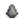 | Prähistorische Handaxt | grau | 128,128,128 | kräftig |
| Prähistorische Rippe | weiß | 255,255,255 | ||
| Prähistorische Rückenwirbel | weiß | 255,255,255 | ||
| 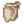 | Prähistorische Schulterplatte | weiß | 255,255,255 | |
| Prähistorischer Schädel | weiß | 255,255,255 | ||
| 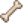 | Prähistorisches Schienbein | weiß | 255,255,255 | |
| Prähistorisches Werkzeug | grau | 128,128,128 | kräftig | |
| 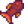 | Purpurfisch | rot | 220,0,0 | |
| Pyrit | gold | 255,215,0 | ||
| Qi Frucht | blau | 46,85,183 | ||
| Qi-Bohne | blau | 46,85,183 | ||
| Qualitätsdünger | braun | 130,73,37 | ||
| Quarz | weiß | 255,255,255 | ||
| Radieschen | rot | 220,0,0 | mittel | |
| Radieschensalat | rot | 220,0,0 | ||
| Radioaktiver Barren | hellgrün | 0,255,0 | ||
| Radioaktiver Karpfen | grün | 10,143,0 | ||
| Radioaktives Erz | hellgrün | 0,255,0 | ||
| Regenbogenforelle | orange | 255,128,0 | ||
| Regentotem | braun | 130,73,37 | ||
| Reis | weiß | 255,255,255 | ||
| Rhabarber | rot | 220,0,0 | mittel | |
| Rhabarberkuchen | rot | 220,0,0 | ||
| Riffbarsch | rot | 220,0,0 | ||
| Ring des Diebes | jade | 130,158,93 | ||
| Ring von Yoba | gold | 255,215,0 | ||
| Robuster Ring | zyan | 0,255,255 | ||
| Rostiger Löffel | grau | 128,128,128 | kräftig | |
| Rostiger Sporn | braun | 130,73,37 | kräftig | |
| Rostiges Zahnrad | braun | 130,73,37 | kräftig | |
| Rotbarbe | rot | 220,0,0 | ||
| Rote Platte | rot | 220,0,0 | ||
| Roter Pilz | rot | 220,0,0 | ||
| Rotfeuerfisch | orange | 255,128,0 | ||
| Rotkohl | violett | 115,41,181 | mittel | |
| Rubin | rot | 220,0,0 | ||
| Rubin-Ring | rot | 220,0,0 | ||
| Rübe | dunkel violett | 148,0,211 | kräftig | |
| Saft (jeder) | grün | 10,143,0 | ||
| Salat | grün | 10,143,0 | ||
| Sandfisch | gelb | 255,230,0 | ||
| 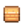 | Sandstein | sand | 255,222,173 | |
| Sardelle | blau | 46,85,183 | ||
| Sardine | blau | 46,85,183 | ||
| Sashimi | pink | 255,163,186 | ||
| Schattenei | schwarz | 45,45,45 | ||
| Schattenessenz | violett | 115,41,181 | ||
| Schattenlachs | dunkel violett | 148,0,211 | ||
| Schattenmayonnaise | rot | 220,0,0 | ||
| Schatzkiste | gelb | 255,230,0 | ||
| Schiefer | grau | 128,128,128 | ||
| Schlackenscherbe | orange | 255,128,0 | ||
| Schlammstein | braun | 130,73,37 | ||
| Schlangenschädel | sand | 255,222,173 | ||
| Schlangenwirbel | sand | 255,222,173 | ||
| Schleim | grau | 128,128,128 | ||
| Schleim-Charmeurring | grün | 10,143,0 | ||
| Blaues Schleim-Ei | blau | 46,85,183 | ||
| Grünes Schleim-Ei | grün | 10,143,0 | ||
| Rotes Schleim-Ei | rot | 220,0,0 | ||
| Tigerschleim-Ei | orange | 255,128,0 | ||
| Violettes Schleim-Ei | violett | 115,41,181 | ||
| Schleimmakrele | grün | 10,143,0 | ||
| Schnecke | gelb | 255,230,0 | ||
| Schneckengericht | grau | 128,128,128 | ||
| Schnee-Süßkartoffel | weiß | 255,255,255 | ||
| Schokoladentorte | braun | 130,73,37 | ||
| Schutzring | grau | 128,128,128 | ||
| Schwarzbarsch | braun | 130,73,37 | ||
| Seegurke | gelb | 255,230,0 | ||
| Seeigel | violett | 115,41,181 | ||
| 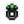 | Seelendiebring | gelb grün | 173,255,47 | |
| 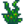 | Seetang | grün | 10,143,0 | |
| Seltene Scheibe | dunkel grau | 169,169,169 | kräftig | |
| Senfkohl | grün | 10,143,0 | mittel | |
| Krabbencocktail | pink | 255,163,186 | ||
| Skelett-Schwanz | weiß | 255,255,255 | ||
| Skeletthand | weiß | 255,255,255 | ||
| Skorpionkarpfen | braun | 130,73,37 | ||
| Smaragd | grün | 10,143,0 | ||
| Smaragd-Ring | grün | 10,143,0 | ||
| Sohn vom Purpurfisch | rot | 220,0,0 | ||
| Solar-Essenz | gelb | 255,230,0 | ||
| Sommerschmuck | gelb | 255,230,0 | mittel | |
| Sonnenblume | gelb | 255,230,0 | mittel | |
| Spaghetti | rot | 220,0,0 | mittel | |
| Speckstein | weiß | 255,255,255 | ||
| Spiegelei | weiß | 255,255,255 | ||
| Stachelrochen | braun | 130,73,37 | ||
| Standarddünger | braun | 130,73,37 | ||
| Stechpalme | rot | 220,0,0 | ||
| Stein | grau | 128,128,128 | ||
| Steinfisch | braun | 130,73,37 | ||
| Sternenscherben | pink | 255,163,186 | ||
| Sternfrucht | gelb | 255,230,0 | ||
| 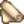 | Stoff | weiß | 255,255,255 | |
| Strandschnecke | zyan | 0,255,255 | ||
| Straußenei | weiß | 255,255,255 | ||
| Straußfarn | grün | 10,143,0 | kräftig | |
| Straußfarn-Risotto | grün | 10,143,0 | ||
| Stör | zyan | 0,255,255 | ||
| Super-Mahlzeit | grün | 10,143,0 | ||
| Super-Seegurke | violett | 115,41,181 | ||
| Süße Edelsteinbeere | rot | 220,0,0 | ||
| Süßkartoffel | braun | 130,73,37 | mittel | |
| Taro-Wurzel | braun | 130,73,37 | ||
| Tee Blätter | grün | 10,143,0 | ||
| Teleport-Totem: Berge | braun | 130,73,37 | ||
| Teleport-Totem: Hof | braun | 130,73,37 | ||
| Teleport-Totem: Strand | braun | 130,73,37 | ||
| Teleport-Totem: Wüste | braun | 130,73,37 | ||
| Thunfisch | blau | 46,85,183 | ||
| Tigerauge | orange | 255,128,0 | ||
| Tigerforelle | braun | 130,73,37 | ||
| Tintenfisch | weiß | 255,255,255 | ||
| Tintenfisch Tinte | schwarz | 45,45,45 | ||
| Tom Kha-Suppe | weiß | 255,255,255 | ||
| Tomate | rot | 220,0,0 | mittel | |
| 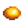 | Topas | gold | 255,215,0 | |
| Topas-Ring | orange | 255,128,0 | ||
| Tortilla | braun | 130,73,37 | ||
| Treibholz | braun | 130,73,37 | ||
| Trilobit | weiß | 255,255,255 | ||
| Tropisches Curry | orange | 255,128,0 | ||
| Trüffel | braun | 130,73,37 | ||
| Trüffelöl | gelb | 255,230,0 | ||
| Tulpe | rot | 220,0,0 | mittel | |
| überbackener Blumenkohl | weiß | 255,255,255 | ||
| überlebensburger | braun | 130,73,37 | ||
| Ungemahlener Reis | braun | 130,73,37 | ||
| Uralte Frucht | zyan | 0,255,255 | ||
| Vampirring | rot | 220,0,0 | ||
| Venusmuschel | hell cyan | 180,255,255 | ||
| Verfeinerter Quarz | iridium | 105,15,255 | ||
| Versteinerte Rippen | sand | 255,222,173 | ||
| Versteinerte Wirbelsäule | sand | 255,222,173 | ||
| Versteinerter Schleim | grün | 10,143,0 | ||
| Versteinerter Schwanz | sand | 255,222,173 | ||
| Versteinerter Schädel | sand | 255,222,173 | ||
| Versteinertes Bein | sand | 255,222,173 | ||
| Violetter Pilz | violett | 115,41,181 | ||
| Volles Frühstück | gelb | 255,230,0 | ||
| Waldspringer | orange | 255,128,0 | ||
| 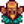 | Warp-Totem: Insel | braun | 130,73,37 | |
| Weintraube | violett | 115,41,181 | ||
| Wein (jeder) | dunkel violett | 148,0,211 | ||
| Weizen | gelb | 255,230,0 | ||
| Weizenmehl | weiß | 255,255,255 | ||
| Weißalge | weiß | 255,255,255 | ||
| Weißer Thun | blau | 46,85,183 | ||
| Welkende Pflanze | kupfern | 179,85,0 | ||
| Wilder Meerrettich | braun | 130,73,37 | ||
| Wildpflaume | dunkel violett | 148,0,211 | ||
| Winterwurzel | orange | 255,128,0 | ||
| Wolle | weiß | 255,255,255 | ||
| Wurzelplatte | braun | 130,73,37 | ||
| Würziger Aal | rot | 220,0,0 | ||
| Zerbrochene Brille | zyan | 0,255,255 | ||
| Zerbrochene CD | zyan | 0,255,255 | ||
| Ziegenkäse | gelb | 255,230,0 | ||
| Ziegenmilch | weiß | 255,255,255 | ||
| 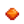 | Zitronenstein | orange | 255,128,0 | |
| Zucker | weiß | 255,255,255 | ||
| Zwergengerät | grau | 128,128,128 | kräftig | |
| Zwergenschriftrolle I | rot | 220,0,0 | kräftig | |
| Zwergenschriftrolle II | grün | 10,143,0 | kräftig | |
| Zwergenschriftrolle III | blau | 46,85,183 | kräftig | |
| Zwergenschriftrolle IV | gelb | 255,230,0 | kräftig | |
| Zwergischer Helm | braun | 130,73,37 | kräftig | |
| 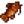 | Zwergwels | braun | 130,73,37 |
Referenzen
Geschichte
- 1.4: Eingeführt.
- 1.5: Ringe zu den Gegenständen hinzugefügt, die in Farbtöpfen und Nähmaschinen genutzt werden können. Koralle von hell-lilarot zu rot geändert.